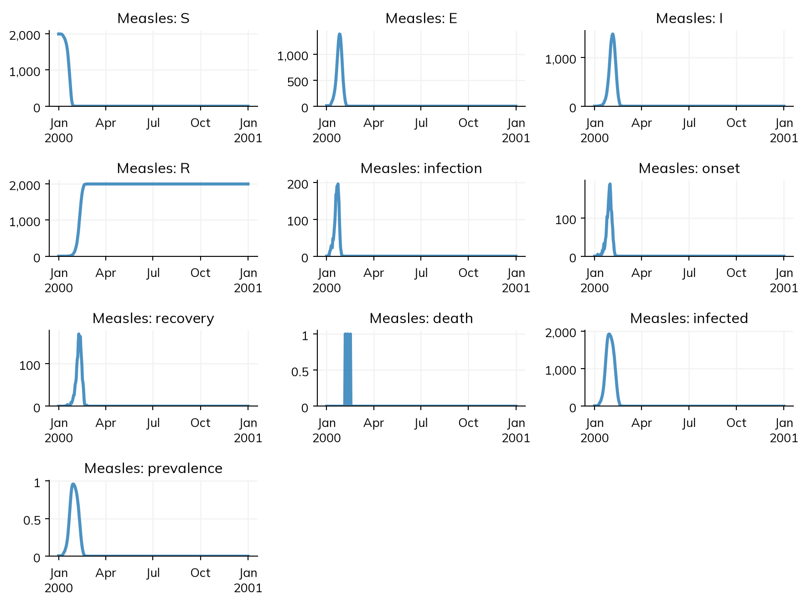
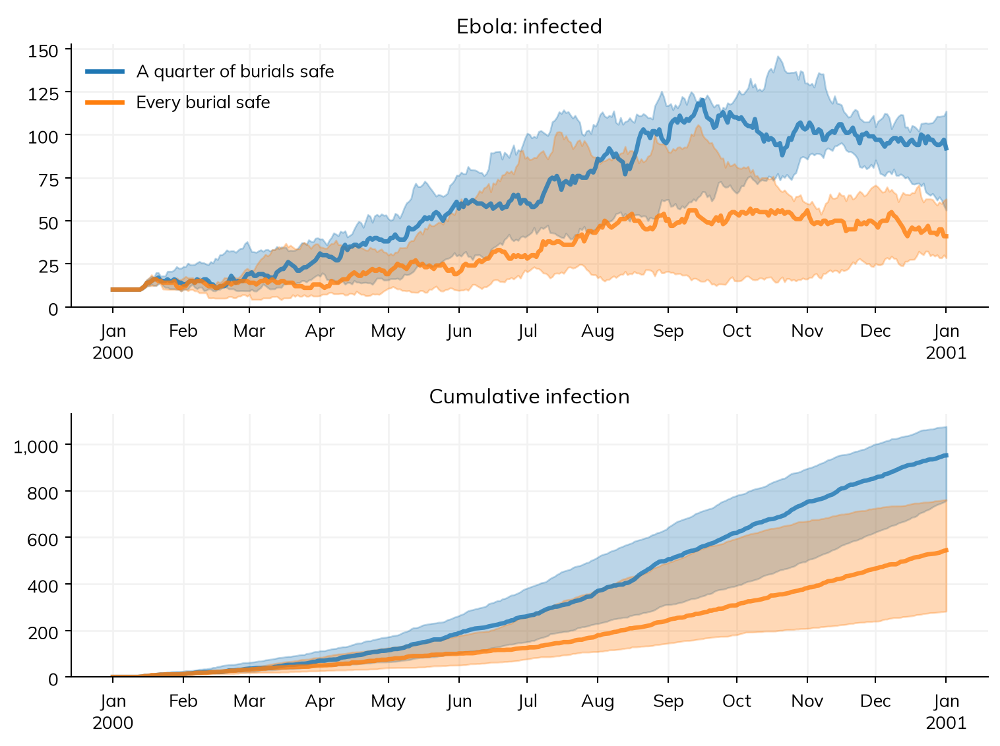
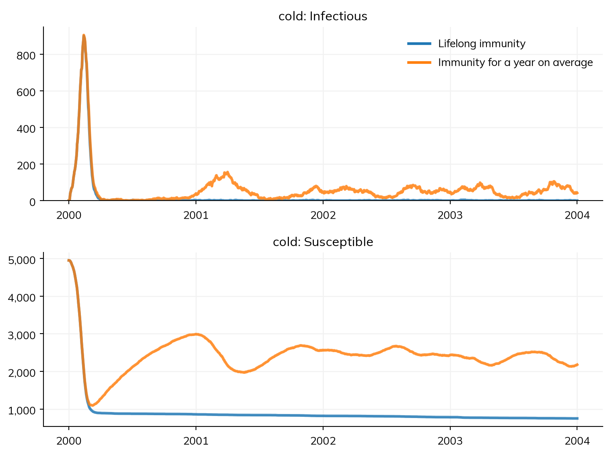

The Starsim library (import starsim.library as ssl; see Library for what it is) has ready-made diseases: outbreak diseases such as measles, Ebola, and cholera, HIV with its treatment, short versions of published models of others, and SIR, SIS, and SEIR written as code. Most are declared as states and transitions, so they run as compartments or as agents (see Diseases); the rest are written as code, so they run as agents (see Custom modules).
Library classes are available both at the top level and through their submodule (ssl.Measles is ssl.diseases.Measles), and can be mixed freely with core modules, here a library disease on a core network:
import starsim as ssimport starsim.library as ssloutbreak =dict(start='2000', dur=ss.years(1), n_agents=2000)sim = ss.Sim(diseases=ssl.Measles(beta=ss.perday(0.3)), networks=ss.RandomNet(), **outbreak) # On a network, beta is the rate per contactsim.run()sim.plot('measles')
Sim: measles, as 2,000 agents, 2000-01-01 to 2001-01-01
Running as agents: n_agents was given
Note: consider a shorter step (e.g. dt=ss.days(0.25)): each step is 1 day, and infection transmits at up to 0.3 per day (per infectious contact), 26% in a step. Taking whole steps, agents may differ from the ODE by an amount of that order; sim.check_dt() shows how much it matters
Note: init_prev seeds E of "measles", where a new infection starts, so nobody is infectious at the start; to seed infectious people, use init=dict(I=...) (a fraction) or init_n= (a number)
Done in 0.28 s; measles: 1,990 infections; at most 1,482 infectious, on 2000-02-05

ImportantOutbreak diseases need a step of days
The outbreak diseases give their natural history in days, and Starsim chooses a step of a day for them. With a step of a year, their durations are shorter than a step, and the dynamics are meaningless (see Time).
The outbreak diseases, and those written as code (the rest are further down; the API reference has every class, with its parameters and defaults):
Starsim 3’s SIR, SIS (with waning immunity), and SEIR, written as code: teaching examples of what the declared ss.SIR, ss.SIS, and ss.SEIR do under the hood as agents, and starting points for a disease written as code (for the models themselves, use the declared ones)
Outbreak diseases: measles, Ebola, and cholera
The three outbreak diseases are declared, so they run as compartments or as agents, with or without a network. Measles is an SEIR with deaths: a latent period of about 8 days, an infectious period of about 11, an R0 of about 15, and a probability of death of 0.5%. Ebola and Cholera have fuller natural histories (severe disease and burial; symptoms and shedding into the water), each written as states and transitions. Their beta is a rate of transmission per day mixing homogeneously; on a network, it is the rate per contact, so give one suited to the network.
Ebola gives each case a chance of severe disease (p_sev) and of death (p_death); severe cases (Sev) transmit more (sev_factor), and so do the bodies of those who have died (D) until they are buried (unburied_factor), unless they are buried safely, at once, which happens with probability p_safe_bury. Here a quarter of burials are safe (the default), or all of them, with each scenario run 5 times, since chance matters near the epidemic threshold:
MultiSim: 10 runs of 2 scenarios (A quarter of burials safe, Every burial safe)
Done in 7.5 s

Cholera adds environmental transmission to the usual transmission from person to person, with a state that is a count of bacteria rather than people (W, ss.State(people=False)): infectious people shed bacteria into it (at shedding_rate, asymptomatic people much less), the bacteria die off (at decay_rate), and susceptible people are infected by the water at a rate that rises with the concentration, reaching half of beta_env at half_sat_rate. This is the pattern to follow for any indirectly transmitted disease (see also Cholera with a water reservoir). Here it is with and without the environmental route (beta_env=0):
town =dict(start='2000', dur=ss.years(1), total_pop=10_000)scenarios = {'Person to person and water': ss.Sim(diseases=ssl.Cholera(), **town),'Person to person only': ss.Sim(diseases=ssl.Cholera(beta_env=ss.perday(0)), **town),}msim = ss.parallel(scenarios, workers=1)msim.plot(['cholera.infected', 'cholera.infection.cum', 'cholera.env_conc'])
MultiSim: 2 runs of 2 scenarios (Person to person and water, Person to person only)
Done in 0.072 s
The results W (the bacteria in the water) and env_conc (their concentration, as a fraction of the maximum rate of infection from the water) track the reservoir.
HIV, treatment, and CD4 counts
ssl.HIV comes with two companion modules that show how a disease, an intervention, and an analyzer fit together:
ssl.ART is a delivery, as ss.treat() is, that offers treatment once to each person infected for a year (art_delay), with the chance coverage (here an ss.timeseries, scaled up over the years), reducing transmission by art_efficacy and raising CD4 counts back towards cd4_max. who= and when= restrict who is offered it and when, as for any delivery.
ssl.CD4_analyzer is an analyzer that records every agent’s CD4 count at every step, as an array of steps by agents (sim.analyzers.cd4_analyzer.cd4), so it suits small sims.
HIV plays out over years, so steps of a year suit it. It runs on ss.SexualNet, where beta is a probability per act, from men to women and from women to men (ss.peract):
MultiSim: 2 runs of 2 scenarios (No ART, With ART)
Done in 0.3 s
Note
ART offers treatment once to each agent, when they have been infected for art_delay (or when it starts, for those infected longer ago), with the coverage at that time: someone offered it while coverage was low is not offered it again. If the number on treatment (n_art) stays at zero, check the coverage and that people are still being infected when treatment starts.
Other diseases written as code
ssl.NCD is a non-communicable disease, so it needs no network. Each agent starts at risk with probability initial_risk; those at risk develop the condition after a time drawn from dur_risk, and die of it after a time drawn from prognosis. Its results are the number at risk, the prevalence of the condition, and the deaths from it. Here a treatment doubles the time people survive with the condition (prognosis, a Weibull distribution whose scale is the typical survival):
MultiSim: 2 runs of 2 scenarios (Current care, Treatment doubling survival)
Done in 0.21 s
Only the starting population is ever at risk here; a model of a real risk factor would put newborns and others at risk too, which is a change of init_post() and step() (see Adapting a library module).
The core ss.SIR, ss.SIS, and ss.SEIR are declared, with exponential durations and no deaths unless p_death is given. ssl.AgentSIR, ssl.AgentSIS, and ssl.AgentSEIR are Starsim 3’s versions of the same models, written as code, with Starsim 3’s defaults (in years, where those of ss.SIR are of a respiratory infection, in days): durations are lognormal (dur_inf=ss.lognormal(mean=ss.years(6)) by default), and AgentSIR and AgentSEIR have p_death=0.01. They schedule each course in whole steps as the agent engine does a declared disease’s, so each case, seeds included, is infectious for dur_inf on average. AgentSIS also has a level of immunity for each agent, boosted by each infection (imm_boost) and waning exponentially (waning), which lowers that agent’s susceptibility. They are the classes to build on for a disease that changes how infection, progression, or recovery happens for each agent, as the outbreak diseases above do; a Starsim 3 subclass of ss.SIR that replaces its methods can build on ssl.AgentSIR instead, unchanged (see Starsim v3).
With the same mean duration and no deaths, the epidemic of AgentSIR peaks higher and ends more sharply than that of ss.SIR, whose exponential durations give many short infections and a few very long ones. Their results are named differently: the declared model’s after its states (I) and transitions (infection), and the version written as code with Starsim 3’s names (infected, and the same infection).
Declared diseases
The rest of the library’s diseases are declared, as states and transitions (Diseases), so each runs as a compartmental model or as agents. Each is a short version of a published model, with its default parameters from that source, named for the disease rather than for the model, so the source is given here and in each class’s docstring. They are still illustrative: each is the simplest version of its model that shows what makes it interesting, and none has been fitted to a particular place.
Class
What it shows
The model, and where the parameters come from
ssl.Malaria
A vector: people and mosquitoes in one model, the mosquitoes as counts rather than people
The Ross-Macdonald model, in the form of Keeling MJ, Rohani P, Modeling Infectious Diseases in Humans and Animals, Princeton University Press, 2008, Program 4.4, which gives every parameter
ssl.MalariaImmunity
Immunity that builds with exposure: inoculation that saturates, superinfection, and a faster recovery once immune
The Garki model of Dietz K, Molineaux L, Thomas A, Bull World Health Organ 1974;50:347-357, as given in Molineaux L, Gramiccia G, The Garki Project, WHO, 1980, ch. 10, Table 31
ssl.TB
A spectrum of disease, with movement back and forth between states and reinfection
The LSHTM model of Schwalb A et al., PLOS Glob Public Health 2025;5(1):e0005050, in the form of TBsim’s reference ODE (lshtm_ode.R), which gives every parameter
ssl.COVID
A chain of increasingly severe states, each of which some people leave by recovering, by age
MEmilio’s values for Germany by age (Kühn MJ et al., Mathematical Biosciences 2021), which give every parameter; ages=False gives MEmilio’s simple example, in one group
ssl.Influenza
A yearly cycle in transmission (ss.seasonal) with waning immunity
Natural history from Carrat F et al., Am J Epidemiol 2008;167:775-785; R0 of 1.3 from Biggerstaff M et al., BMC Infect Dis 2014;14:480; the cycle is illustrative
ssl.RSV
Maternal immunity: babies born protected, in a seasonal MSEIRS model
Weber A, Weber M, Milligan P, Math Biosci 2001;172:95-113, for the infectious period, the seasonal form, and R0
ssl.Pertussis
Immunity that wanes over decades, giving epidemics that return every few years
Wearing HJ, Rohani P, PLoS Pathogens 2009;5(10):e1000647, for the natural history, R0, and duration of immunity
ssl.Dengue
Several serotypes, each a disease with its own vector, and partial cross-protection between them
The Ross-Macdonald structure above, with indicative dengue values; cross-protection as found by Reich NG et al., J R Soc Interface 2013;10:20130414
ssl.Typhoid
Chronic carriers: a few people shed for life, at a hundredth of the infectiousness of an acute case
Pitzer VE et al., PLoS Negl Trop Dis 2014;8(1):e2642, for the carriers, waning, and R0 of 2.8
ssl.Polio
A rare outcome as a branch: about 1 infection in 200 causes paralysis
US CDC Pink Book for the paralytic fraction; Fine PEM, Carneiro IAM, Am J Epidemiol 1999;150:1001-1021, for R0
ssl.Syphilis
Stages, with infectiousness that falls with the time each person has spent in the latent stage, which needs agents
STIsim’s syphilis module, which cites its own sources
ssl.Gonorrhea
An SIS infection on a sexual network
STIsim’s gonorrhea module
Malaria is the clearest example of what declaring buys: mosquitoes are states like any other, declared with people=False so that they are counts rather than people, and R0() works out the reproduction number from the model itself:
Starsim’s R0() counts each passage through a mosquito as a generation, so it is the square root of the classical Ross-Macdonald value, m·a²·b·c/(γ·μ_v) = 213.
The Garki model adds immunity, and with it the result the source is known for: malaria dies out below a critical vectorial capacity, (α₁ + δ)/g, which is 0.022 contacts per person per day with these parameters:
The same declaration runs as agents (n_agents= instead of total_pop=), where the prevalence is the same but each run differs by chance.
Since these are declared, describe(), diagram(), and equations() work on any of them, which is the quickest way to see what a model does (ssl.Dengue is a set of serotypes, each an ssl.DengueSerotype, so each is shown in its own right, e.g. sim.diseases.den1.diagram()):
ssl.Typhoid().equations()
dS/dt = -birth_rate * S - (beta * S * I / N + beta * rel_carrier * S * C / N) + R / dur_imm + birth_rate * (S + I + C + R).n
dI/dt = (beta * S * I / N + beta * rel_carrier * S * C / N) - birth_rate * I - I / dur_inf
dC/dt = p_carrier * I / dur_inf - birth_rate * C
dR/dt = (1 - p_carrier) * I / dur_inf - birth_rate * R - R / dur_imm
One of them needs agents rather than compartments: ssl.Syphilis, because the falling infectiousness of latent syphilis depends on the time each person has spent in that stage (El.time_in, in two modifiers of rel_trans declared in the class), a clock that is kept for each person. The two sexually transmitted infections, ssl.Syphilis and ssl.Gonorrhea, also take a probability of transmission per act (ss.peract), so they need a sexual network such as ss.SexualNet, whose partnerships run as agents. The rest run under any solver.
Adapting a library module
Library modules are ordinary Starsim modules, so they can be changed in the usual ways. The simplest is to change their parameters:
For a change to how the disease works, build on the class. Here ssl.AgentSEIR gets immunity that wanes, after a time drawn for each person from dur_immune, and a small daily chance of infection from outside the population (p_import). The new class adds two parameters and a state in __init__(), schedules the loss of immunity when each agent is infected (set_prognoses()), and at each step makes the agents whose time has come susceptible again and infects the imported cases (step_state()):
classWaningSEIR(ssl.AgentSEIR):def__init__(self, dur_immune=ss.expon(mean=ss.years(1)), p_import=ss.bernoulli(p=1e-4), **kwargs):super().__init__(**kwargs)self.define_pars(dur_immune=dur_immune, p_import=p_import)self.update_pars(**kwargs)self.define_states(ss.TimeArr('ti_susceptible', label='Time of losing immunity'))returndefset_prognoses(self, uids, sources=None):super().set_prognoses(uids, sources)self.ti_susceptible[uids] =self.ti_recovered[uids] +self.pars.dur_immune.rvs(uids)returndefstep_state(self):super().step_state() waned = (self.recovered &self.ti_susceptible.due()).uidsself.recovered[waned] =Falseself.susceptible[waned] =Trueself.infect(self.pars.p_import.filter(self.susceptible.uids)) # Infections from outside, counted in the result infectionreturncold =dict( # A cold: a latent period of 3 days, infectious for a week, and an R0 of about 2beta= ss.perday(0.03),dur_exp= ss.lognormal(mean=ss.days(3)),dur_inf= ss.lognormal(mean=ss.days(7)),p_death=0,init_prev=0.01,name='cold',)pars =dict(start='2000', dur=ss.years(4), n_agents=5000, networks=ss.RandomNet())scenarios = {'Lifelong immunity': ss.Sim(diseases=WaningSEIR(dur_immune=ss.constant(ss.years(100)), **cold), **pars),'Immunity for a year on average': ss.Sim(diseases=WaningSEIR(**cold), **pars),}msim = ss.parallel(scenarios, workers=1)msim.plot(['cold.infectious', 'cold.susceptible'])
MultiSim: 2 runs of 2 scenarios (Lifelong immunity, Immunity for a year on average)
Done in 6.3 s

Copying a library module and editing it is also a good way to use it; that is what these modules are for. See Custom modules for writing modules from scratch, and the tutorial T8 – Custom modules for a worked example.
Further reading
STIsim: repository: fuller Starsim models of HIV, syphilis, and other sexually transmitted infections